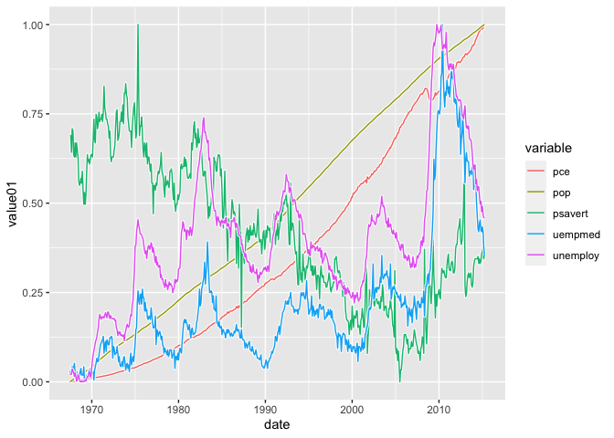
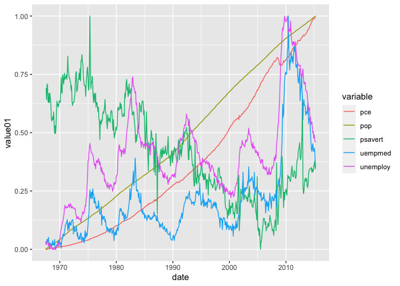
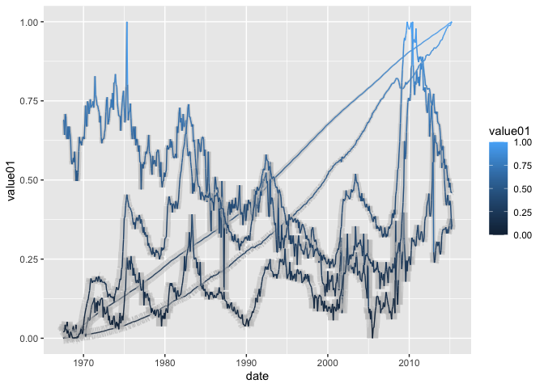
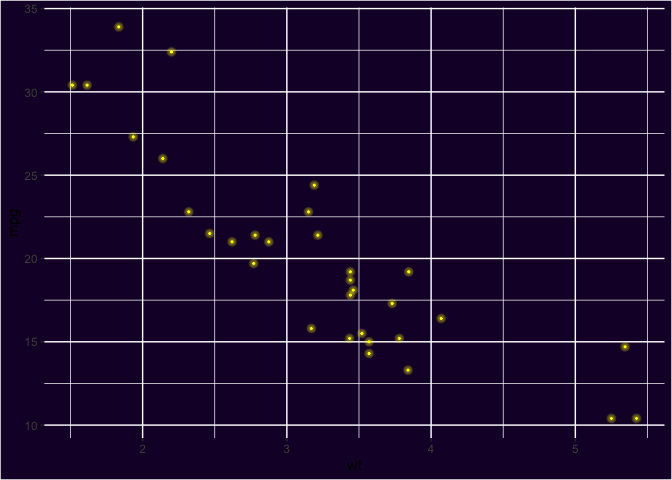
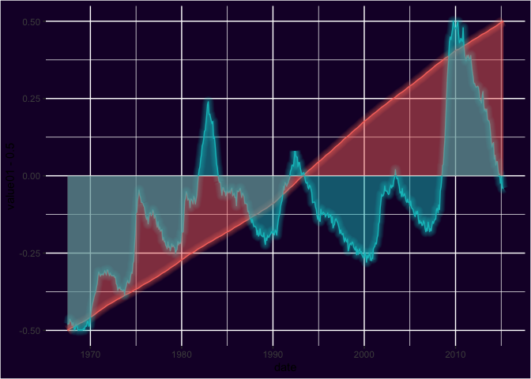

Website Link
Click here to go to where the original R package came from.
Click here to go to my deployed website.
#5 Customized Things
I changed the whole background style of the pkgdown website.
I changed the locations of each bottoms in Navbar.
I customized the navigation bar that appears at the top of the page with the navbar field.
I have change the name of the bottom in the navbar.
I customized the footer field.
⏬ Installation
Get the development version from github:
## install.packages("devtools")
devtools::install_github("marcmenem/ggshadow")📖 Vignette
## after installing the package
vignette("ggshadow", package="ggshadow")💹 Example
With ggshadow
library(ggplot2)
library(ggshadow)
ggplot(economics_long, aes(date, value01, colour = variable)) + geom_shadowline()

example with
Without ggshadow
library(ggplot2)
ggplot(economics_long, aes(date, value01, colour = variable)) + geom_line()

example without
ggshadow supports varying the line color
library(ggshadow)
library(ggplot2)
ggplot(economics_long,
aes(date, value01,
group = variable,
colour=value01,
shadowcolor='grey',
shadowalpha=0.5,
shadowsize=5*(1-value01))) +
geom_shadowline()

color varying
ggshadow also provides a Neon glow style
```{r fig.height=7, fig.width=7}
ggplot(economics_long, aes(date, value01, color = variable)) + geom_glowline() + guides(color=‘none’) + theme(plot.background = element_rect(fill = “#190132”), panel.background = element_rect(fill = “#190132”))

### Neon glow points
```{r}
ggplot(mtcars, aes(wt, mpg)) +
geom_glowpoint(color='yellow') +
guides(color='none') +
theme(plot.background = element_rect(fill = "#190132"),
panel.background = element_rect(fill = "#190132"))

glowpoint
Adding a fill below the neon glow line
library(dplyr)
ggplot(filter( economics_long, variable %in% c('pop', 'unemploy') ),
aes(date, value01-0.5, color = variable, fill=variable)) +
geom_glowline() + guides(color='none', shadowcolour='none', fill='none') +
theme(plot.background = element_rect(fill = "#190132"),
panel.background = element_rect(fill = "#190132"))

glowlinefll